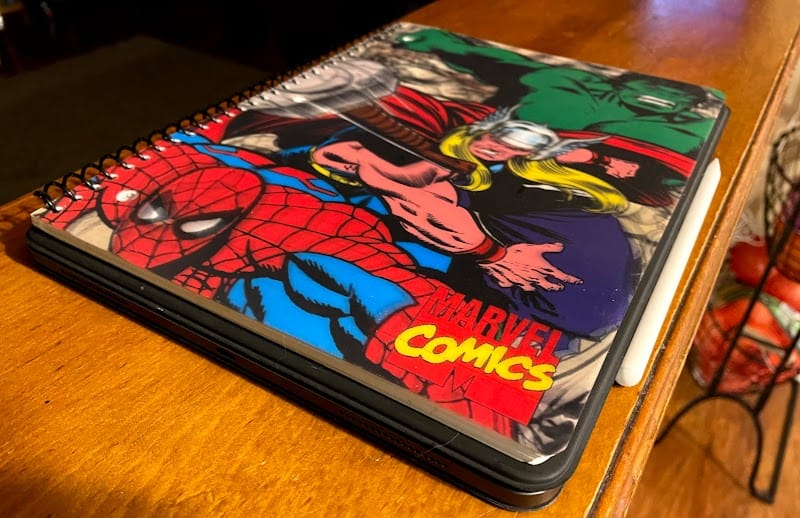
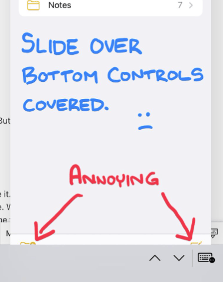
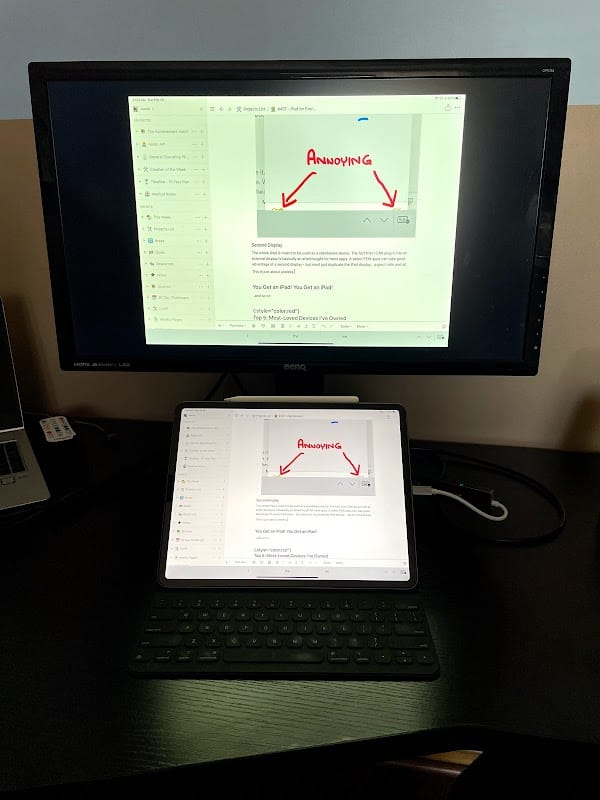
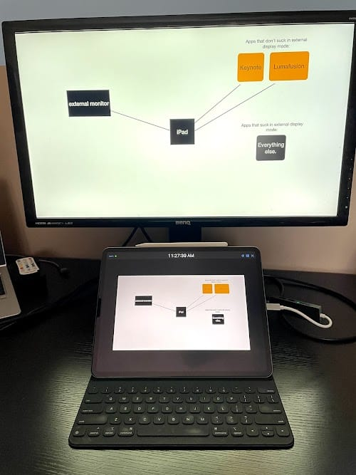
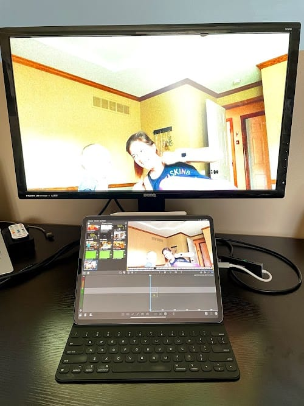

Most of this Column is about my continued love1 of the iPad Pro. If that’s too consumerist for you, skip to the heading “Non-iPad Stuff”.
The iPad
In the realm of devices I’ve ever owned, the iPad I’m writing this Column on stands above anything else in terms of how much I love using it. I’ve owned some great devices in the past (see the Top 5, but none have been this versatile and fun. No other device have I ever gone out of my way to use this much. I feel like I could be stuck in a windowless room with a this iPad/Apple Pencil combo, a USC C cable, WiFi, and a desk and I’d be content indefinitely. Nothing else I’ve ever owned I can say that about.
For context, I am using the 4th generation iPad Pro 12.9”. It’s currently the latest & greatest iPad2. I use it with the Smart Keyboard Folio.
Points of Appreciation
Size & Weight
The 12.9” iPad is basically the same size as a 3-Subject spiral notebook. Call me crazy but I’d consider that “just about perfect” for a multitude of use cases.

Some may opt for the smaller 11 inch iPad, which would be much more comfortable to use with one hand. That’s perfectly fine. I almost never hold my iPad while I use it. I’m very happy to have the extra screen real-estate.
System-Wide Integrations
The iPad plays so nicely with my iPhone, and with itself. I’m a sucker for little things like a keyboard shortcut to bring up the Spotlight search (Commands + Space bar, for the record). I never feel like I’m more than 3 seconds away from anything else I want to do… because I’m not. I can fly through the interface using any of the MANY input methods available.
In addition to all of that, Apple’s built in “Shortcuts” app is awesome. I do almost all of my “life tracking” inputs using Shortcuts now. The possibilities within that ecosystem are so incredibly vast. I could write multiple blog posts about how cool shortcuts are and what you can do with them. Maybe another day.
Multimedia Consumption Capabilities
This one seems obvious, but you’ve gotta say it. The iPad is a stellar multimedia consumption device. It is more powerful than my Nintendo Switch. It’s big enough to watch movies, but small enough to function like a Kindle device. Its battery is good for multiple hours of continuous usage. Its screen refreshes at 120hz and the power of the device ensures that your animations get the benefit of all 120 of those refreshes each second. Even something as stupid simple as “scrolling” feels so much better on the iPad than anything else I’ve ever used. It’s incredible.
The App Store is full of apps that take full advantage of the device. There are games, like legitimate games that can rival the likes of dedicated gaming consoles. There is an app for every streaming service in existence. A tablet + noise-canceling headphones is the ultimate way to watch a movie (outside of a theater), so far as I’m concerned.
Multimedia Creation Capabilities
The iPad has slowly become more and more capable of replacing “Pro” apps people have always relied on computers for.
GarageBand is an underrated, under-appreciated app. Sure, it enables any idiot like me to crank out garbage, but it also can be used to quickly record, mix, and play around with new ideas. I’m 100% sure that there are legitimate musicians out there who got started just messing around with GarageBand.
I now edit our podcast using my iPad. The purpose-built app “Ferrite Pro” is faster than my old solution using a computer, mouse, and keyboard. Also now I know what “Ducking” is. Guy1 was way wrong about it.
There are dozens of great photo-editing apps out there. I’m not hugely into photo editing, but if I were - I’d re-touch my photos by actually touching my photos.
When it comes to editing videos, there are a number of solid entry-level video editors you can use to stitch together clips, set them to a song, and over-use transitions. Beyond the entry level stuff there are some very legitimate video editing tools. There are professional YouTubers who make a living producing and editing videos from an iPad using LumaFusion. I have yet to produce any video content since downloading LumaFusion, but that time is coming. From the experience I do have with it thus far, it’s actually better at showing me a preview that doesn’t freeze and stutter.
Computer-Aided Drafting! This is a new thing I didn’t know I could do until a few months back. Yet again the iPad has good, dedicated apps for this. Things that were built from the ground-up as an iPad experience. Shapr3d has already helped me turn a few projects into reality.
Drawing with an iPad is better than drawing with a pencil and paper. I’m not an artist’s artist, so take this entire opinion with, say, 4.3 grains of salt. But I enjoy the experience of kicking back and making stuff on Procreate more than I do with a sketch pad and several pencils/erasers. I haven’t yet broken into Vector art, despite trying in earnest for a couple evenings. It seems like it would be way up my alley.
I should also pay lip service to the fact there’s 3 cameras + LiDAR on this thing. Scanning rooms with Polycam is cool - as is the built-in “Measure” app. All of these things come in handy from time to time, but still don’t be the person taking pictures at the park with an iPad.
School & Work
One thing I don’t have a ton of experience with is working on an iPad. I can’t use it for my job. I am not actively in school, so I don’t have the benefit of that experience either… but if I could use it for my job and/or I was in school, this device would be glued to my side even more than it already is. I’ve written about Notetaking Platform Anxiety (which I’ve mostly gotten over at this point thanks to Notion + Lastpass), but there’s more possibilities with GoodNotes 5, Notion, and even the built-in “Notes” app than I ever dreamed of back when I was obsessing over this years ago.
I do not have Microsoft Office installed on my iPad. I have almost zero use for Microsoft Office product in my personal life. Google Docs does just fine. I’ve never tried to use the build-in Office applications on the iPad. I’m sure they’re fine, but I’ve never had a reason to use them.
Communication & Coding
The iPad is an adept communications device, and technically capable of producing software. You have full access to iMessages, Facetime, email, and any sort of other app-based communications platform you so choose.
Coding from an iPad is possible, but still usually a limited experience full of workarounds. That said, apps like Pythonista can take you pretty far. Also there are plenty of text editors available and methods to interface with Git repos and/or SSH targets. I have full and working access to Glitch.com, which is how I’m building all my hobbiest stuff right now. I’m planning to try to use the iPad for creating the Raspberry Pi-based “Personal Data Warehouse”, once I get the Glitch-based version to a point where I’m happy with it.
I heavily look forward to a day where I can use VS Code on the iPad. Maybe with the advent of Apple Silicon, that will happen someday soon.
Things that Could be Better
For everything that’s great about the iPad, there is room for obvious improvement in certain regards.
Bugs
Although I’m impressed by iPadOS as a whole, there are some seams that could be ironed out. I can reproduce numerous bugs & undesirable behaviors.
- The software keyboard often unnecessarily displays when I first flip it into the smart folio typing mode.
- Bottom menus in slide-over mode are obfuscated by the keyboard soft keys.

- I’ve seen several cases where the “roundedness” of the corners on various software elements changes slightly during animations. These are the nittiest of nitpicks.
Second Display
The whole iPad is meant to be used as a standalone device. The fact that I CAN plug it into an external display is basically an afterthought for most apps. A select FEW apps can take good advantage of a second display - but most just duplicate the iPad display… aspect ratio and all. This is a more legitimate gripe.
This is just about useless.

These are nice, but very specific to a given use case.


Convergence of MacOS & iPadOS
In an ideal world, the iPad would look feel and function exactly like it does already… up until you plugged into an external display. At which point it would essentially switch to a Mac Mini. Now that Apple is producing the M1 chip for their desktop OS, I think this is not out of the realm of possibility. I love iPadOS and the windowing limitations built in make for a much simpler, more elegant experience in the tablet environment… but when it’s connected to a keyboard & mouse & external display, if it flipped over to full-Mac mode, it would become literally the only device you need in any context.
You Get an iPad! You Get an iPad!
This is an absolutely worthless daydream; but the other day I was thinking about “what would happen if every citizen of a country were just… given an iPad?” If we knew that everyone had access to this type of a device (and internet was a guaranteed thing, like it should be), we could reshape some of the more tedious parts of societal living. We could have a common set of apps & functions for things like - sharing medical information, doing your taxes, attending school, interfacing with the library system. If everyone had one, there would be little incentive for them to be stolen. Meanwhile we’d have a culture full of people who have access to this incredible tool for learning, communicating, creating, and consuming.
I also realize I’m just setting up an episode of “Black Mirror” and there are so many things that could go horribly wrong.
Non-iPad Stuff
Lately I’ve not been writing on here too much. Instead I’ve been going hard in the paint.
Schema Change
For anyone obsessively checking my Creation Of The Week (read: nobody) this comes as no surprise - I’ve been hard at work theorizing and writing code. That’s taken up 90% of my non-family-oriented available time over the past couple months. I finally hit a few milestones.
In the transition between “The Life Tracker” and my “Personal Data Warehouse” I added some additional layers of complexity to enable some neat stuff and solve a lot of problems I have lived with for nearly a decade.
What I did was introduce the concept of “scope”. I have written in the past about my desire to find a solution for tracking things that happen every day, along side things that only happen once a week and stuff that could happen hundreds of times a day. This increases the complexity of the system tremendously.
When looking at a data table (or spreadsheet, if you like), it’s important to know what delineates the records (or rows) from each other. In data science terms, this is called the “key” of the table. Before, the key of The Life Tracker was pretty easy to define. Each row was separated from the others by the “date” field. This can no longer be true, though, if I hit a button that adds a row every time I take some ibuprofen. Suddenly my key field becomes key fields, which makes things more complicated. I wound up breaking the whole thing into multiple tables, which really I’d sort of done in the past with Life Tracker v3 through v7. This time it’s just not spreadsheet-based.
There is literally an entire discipline of study regarding the best way to organize databases to optimize them for various purposes. This experience has already taught me a lot of neat stuff, and I’ve still got a long way to go.
Garage Sale
Also were looking to downsize the stuff we own. This is also not a single-day exercise. Melissa has been doing 95% of the lifting, but man that remaining 5% is tough.
Top 5: Most-Loved Devices I’ve Owned
This is me looking back with rose-colored glasses, somewhat. But also a reflection of my day-to-day fondness for using each device in question.
5. The Nintendo Switch
My Nintendo Switch doesn’t get the attention I wish I could give it. I really like the concept of the device. Video games don’t need to be 4k120fps to be enjoyable. What they have to be is fun and inventive, and that’s what the Nintendo Switch was all about. The fact that it’s both a TV Console and a handheld gaming system is such a great design. It’s only hurt by the fact that my hands do NOT work with the joycons, which makes it much less viable as a “play anywhere” device for me. Regardless, two of my favorite games of all time are Switch games (Breath of the Wild & Hollow Knight).
4. My Desktop PC
My current desktop PC is the best, most powerful PC I’ve ever owned (note: it’s not powerful by today’s standards). I built it around being a moderately capable gaming machine at the time. I used it as a gaming rig for several years. Although it’s role has devolved to basically JUST being my device for doing serious coding, it’s still been great to me for 5+ years now.
3. The Nexus 5
The Nexus 5 was a great phone. It’s my favorite phone I’ve ever owned. It was the high point of the confluence of feature set, usability, and affordability. The Nexus 6P & the OG Droid are both close on their tail. No iPhone has ever gotten me as excited as any of those 3 devices did. It’s too bad Android phones fell off a cliff of botched mimicry and muddled completely rudderless design.
2. The Nexus 7 (original)
The original Nexus 7 was a 7-inch pure Android tablet released by Google in 2012 for the ridiculously good price of $199. It was an awesome size. Just big enough to feel more substantial than a phone, but small enough to fit anywhere. It was light, but felt “rugged”. It was a device that was completely built around being a good “consumption” device. It didn’t bother having a back-facing camera. It didn’t try to be a “work” device. That made it much better at what it was supposed to be. When you bought it, you were credited with some Google Play money to make good use of it.
1. The iPad Pro 12.9” (4th Generation)
The device this Column was written about (and on).
Quote:
Alexa, play ‘matching pitch’ My 2 year old asking Alexa to play the song we sing when we have him match pitch
Footnotes
-
The use of the term “love” to describe in inanimate object is a bit tricky for me. I love my wife. I love my kids. I’d throw this iPad into the blades of a helicopter before letting my kid get hurt. Love of objects is a different feeling altogether. Terms are allowed to have different, but vaguely related meanings. It’s called “semantic overload”. ↩
-
Rumors (and common sense) strongly suggest that this iPad will become not the latest & greatest in the near future. And that’s okay. ↩